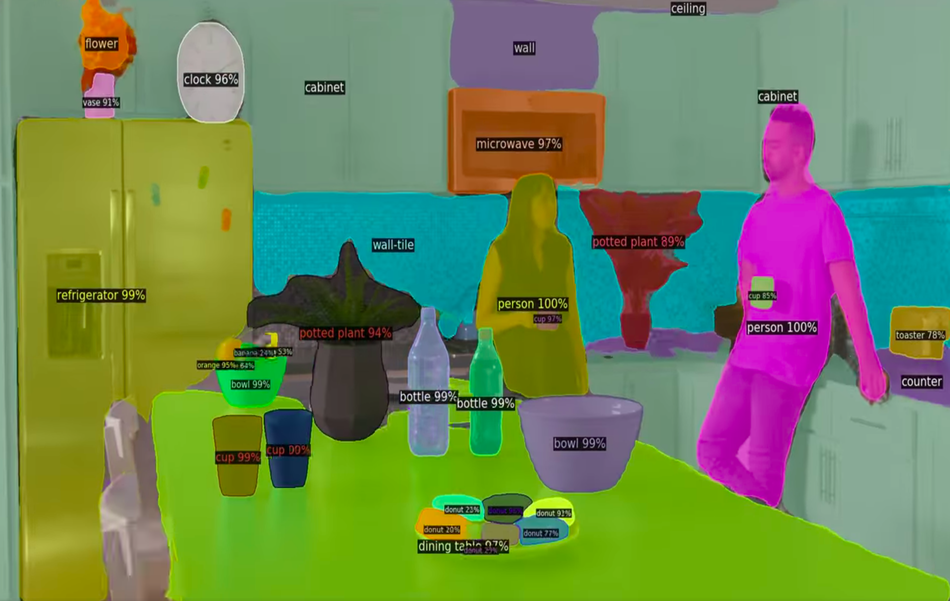
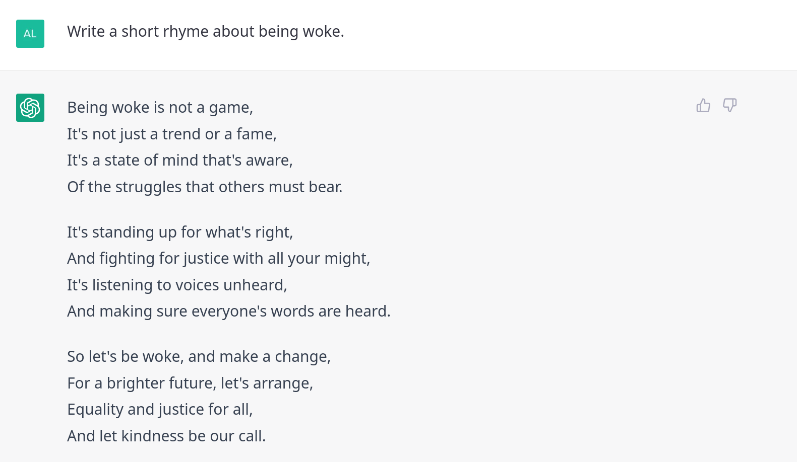
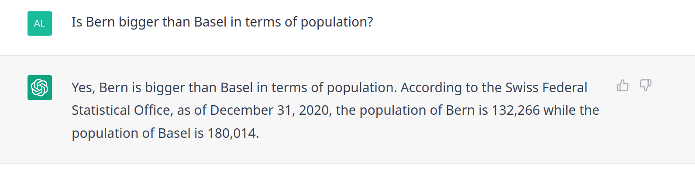
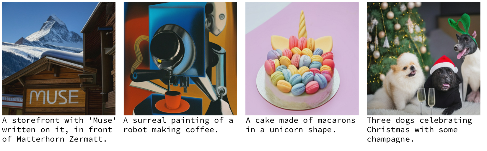
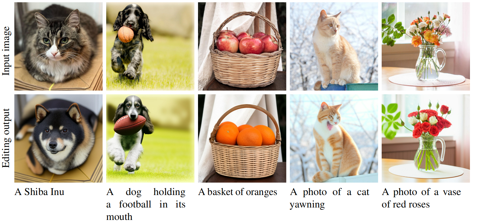

The ABC of Computational Text Analysis
#1 Introduction +
Where is the digital revolution?
Outline
- digital revolution or hype?
- about us
- goals of this course
- SRF-Archivperle Computer (1982)
- Dreiteilig
- Heranführung, Austausch, Kursorganisation
- brandaktuelles Thema, öffentlicher Diskurs
- Exkurs: Computer als Zaubermaschine vs. Werkzeug
- Was ist künstliche Intelligenz?
- Erst dann Textanalyse im eigentlichen Sinne
AI: A non-standard Introduction
The world has changed, hasn’t it?

- Welt im Wandel
- Einfache Google Suche nach “AI”
- Wer kennt solche Bilder nicht?
- Roboter, Hybride, Hirne
- Blauton
- populärwissenschaftliche Bild transportiert
- AI ist hip: Technologiefirmen, Forschung, Konsumenten
An Era of Big Data + AI
- Big Data discredited due privacy concerns (NSA, Facebook etc.)
- Daten sind nicht wie Gold/Öl. Analogie unpassend, weil wieder verwendbar und rekombinierbar. Wert durch Teilen statt Besitzen.
Group Discussion
What makes a computer looking intelligent?
AI is a moving target with respect to …
- human capabilities
- technological abilities
- Diskussion bevor ich meine Perspektive einführe (5min)
- Vorstellung von Studis?
- Wer braucht Siri/Alexa & Co.?
- Altersdifferenz spielt wohl eine Rolle in IT
- Intelligenz nichts Absolutes, relativ zu Menschen
- von Schachspielen zu Lernen
- Generalisierbarkeit
- Gewöhnungseffekt: “AI is whatever hasn’t been done yet.” D. Hofstadter
- Eindrückliche Beispiele, Stand Forschung
Transfer of Human Intelligence
from static machines to more flexible devices
- mimicking intelligent behavior
- reading + seeing + hearing
- speaking + writing + drawing
- a sense of contextual perception
- many degrees of freedom
- Referenzfolie Mensch
- Imitieren von menschlichen Sinnen und Ausdrücken
- Sprechen/Sehen/Hören/Zeichnen
- Statische maschine
- if this then that
- Kontextabhängiges Handeln
- Interaktion initiieren
- Situationsangepasstheit
- Eindrückliche Beispiele, Stand Forschung
Seeing like a Human?

- Unbeschriftete Dinge? → ontologische Frage
- Mensch nur als Ganzes, ohne Erkennung von Kleidern
- Person ohne Geschlecht?
- Teekanne falsch/nicht erkannt
- Keine naturgegebene Ordnung oder technologische Notwendigkeit, sondern in Code/Daten gegossene Entscheidungen
Speaking like a Human?
Speech-to-Text (STT)
Recognizing speech regardless of language, accent, speed, noise etc.
Check out samples of Whisper [@Radford2022]
Text-to-Speech Synthesis (TTS)
Personalizing voice given an audio sample of 3s
Check out samples of VALL-E [@Wang2023]
Outsmarting Humans?



UniLu Suchmaschine
Schweizerdeutsch
Essay + Reim
Bullshit
ChatGPT is amazing but …
… it is also a stochastic parrot. :parrot:
[@Bender2021]
Can you disenchant ChatGPT?
Experiment with ChatGPT
- What works (surprisingly) well?
- Where does it fail?
Beyond Perception and Unimodality
- passive vs. aktive Rolle von AI
- Chat verbindet Wahrnehmen + Generieren
- intensive Forschung Generieren von Text, Bild, Video
- Zusammenbringen von mehreren Medien
- Auswirkung auf Sozialwelt
- beliebiges Generieren photorealer Gesichter durch Computer
- Problem: Es gibt kein manipulationssicheres Medium mehr. Es kann alles generiert werden: Bilder, Video, Texte
Trend towards Multimodality

- zielgerichtete Generierung über Multimodalität
- mit Sprache neue, sehr eigenwillige (!) Bild generieren lassen
- 3 Monate altes Paper
Deepfakes? It is real!

Nicht nur generieren, sondern auch verändern
Deepfakes
- Bildmanipulation gab es schon zu Zeiten Stalin, aber “Photoshop” wird einfacher
- nicht nur technologisch interessant, sondern auch gesellschaftliche Auswirkungen
Problematisch für
Persönlichkeitsrechte
Journalismus und historische Forschung
Business-Möglichkeiten
- Zalando-Kleider virtuell anprobieren
- virtueller Ikea Einrichtungskatalog
But videos are still real?
Checkout this demo trailer for authentic dubbing.
:movie_camera:
https://www.latimes.com/entertainment-arts/business/story/2022-12-19/the-next-frontier-in-moviemaking-ai-edits
Artificial Intelligence
Subfields
- Natural Language Processing (NLP)
- Computer Vision (CV)
- Robotics
- Von der Anwendungsseite zum technisch-wissenschaftlichen Teil
- in Wissenschaft primär drei Felder
- sehr viel gemeinsam in Methodik: Lernen von Daten
How does Computer Intelligence work?
- interchangeably (?) used concepts
- Artificial Intelligence (AI), Machine Learning (ML), Deep Learning (DL)
- learn patterns from lots of data
- more recycling than genuine intelligence
- theory agnostically
- supervised training is the most popular
- learn relation between input and output

- Wie funktionieren diese Systeme?
- AI-Paradigma: Logik vs. Lernen
- DL = dominantes ML-Modell
- schichtweise Abstraktion
- unzureichende Metapher Hirn (Neuron trägt zur Konfusion bei)
- Lernen von Unmengen Daten
- Input-Antwort-Beziehung
- Regression = ML
Related concepts (src)
AI Hype in a Nutshell
AI = from humankind import solution- manche Dinge für Computer schwierig, für Menschen einfach (und umgekehrt)
- Schach einfach für Computer, Unterschied Katze/Hund lange schwierig
- Algo für Katze/Hund-Bestimmung erkennt kein Auto, weil zu spezifisch
- keine Angst vor Computer, die Welt übernehmen
This is how current AI looks like
- Falls jemand noch immer überzeugt ist von der Intelligenz dieser Systeme, dies soll Zweifel hervorrufen
About us
Personal Example
directed country mentions in UN speeches
- UN-Debatte: Wer erwähnt wen in Rede?
- Aufmerksamkeiten
- Extrahiert aus Texten
- Farben/Ordnung nach Kontinent
- Rolle der USA (Regenbogen)
- Erkenntnisse
- Regionale Aufmerksamkeit statt Globalität
- Allianzen und Feindschaften
Goals of this Course
What you learn
- computationally analyze, interpret, and visualize texts
- command line + Python
- digital literacy + scholarship
- problem-solving capacity
- Text als Datenform → Textanalyse
- technisch: CL + Python Sprachen
- Tools/Arbeitsweisen für Alltag/Forschen/Arbeit
- Leben vereinfachen
- Dinge, die ich spät gelernt habe
- Problemlöseverhalten
- Nachlesen & Ausprobieren
Learnings from previous Courses
- too much content, too little practice
- programming can be overwhelming
- learning by doing, doing by googling
- eigene Erfahrung als Studi und Tutor
- Zu ambitioniert + an Bedürfnissen vorbei
- zu einseitig Programmieren
- braucht viel Übung
- Kein Einzelfallwissen, sondern Selbsthilfe
- learnbyexample
- Doing is often better than thinking of doing
Levels of Proficiency
- awareness of today’s computational potential
- analyzing existing datasets
- creating + analyzing new datasets
- applying advanced machine learning
- Kompetenzstufen
- Computer nicht nur Word + Youtube, sondern auch Werkzeug
- Ziel: Stufe 3
What I teach
- computational practises
- critical perspective on technology
- lecture-style introductions
- hands-on coding sessions
- discussions + experiments in groups
- Aufbau Unterricht
- Seminar heisst interaktiv
- Mix zwischen Vorlesung, Diskutieren & Experimentieren
Topics
Techniques
- text processing
- extracting and aggregating information
- creating simple visualizations
- optical character recognition (OCR)
- scraping files
Data
- using existing datasets
- creating new datasets
:nerd_face: inputs are more than welcome!
- Techniken & Resourcen
- Text zu Daten machen und auswerten
- ganzer Arbeitsprozess von PDF bis zur Visualisierung
- Inputs
Provisional Schedule
| Date | Topic |
|---|---|
| 03 March 2023 | Introduction + Where is the digital revolution? |
| 10 March 2023 | Text as Data |
| 17 March 2023 | Setting up your Development Environment |
| 24 March 2023 | Introduction to the Command-line |
| 31 March 2023 | Basic NLP with Command-line |
| 07 April 2023 | Learning Regular Expressions |
| 14 April 2023 | Working with (your own) Data |
| 21 April 2023 | no lecture (Osterpause) |
| 28 April 2023 | Ethics and the Evolution of NLP |
| 05 May 2023 | Introduction to Python |
| 12 May 2023 | NLP with Python |
| 19 May 2023 | NLP with Python + Working Session |
| 26 May 2023 | no lecture (Christi Himmelfahrt) |
| 02 June 2023 | Mini-Project Presentations + Discussion |
- 12 Sitzungen, vorläufiger Plan
- Überblicksitzungen
- Gemeinsame Installation → immer wieder Probleme
- Kommandozeile
- Daten
- Sitzung mit aktueller NLP und Ethik
- Python
- Mini-Projekt
TL;DR :rocket:
You will be tech-savvy…
…yet no programmer applying fancy machine learning
- Nicht ML, aber solide Analyse
- Empirische Arbeiten schreiben
- bereits sehr effektiv und toll
Requirements
- no technical skills required :white_check_mark:
- self-contained course
- laptop (macOS, Win10, Linux) :computer:
- update system
- free up at least 15GB storage
- backup files
Grading :writing_hand:
- 3 exercises during semester
- no grades (pass/fail)
- mini-project with presentation
- backup claims with numbers
- work in teams
- data of your interest
- optional: writing a seminar paper
- in cooperation with Prof. Sophie Mützel
- Seminar üblicherweise mit Vorträgen
- Hier: 3 Übungen + Mini-Projekt
- Denkt über Daten nach → mehr Spass, wenn Interesse daran
- Auseinandersetzung fördern, keine harte Beurteilung
- Teamarbeit
- Kollaboration Mützel
Organization
- seminar on Thursday from 2.15pm - 4.00pm
- course website KED2023 with slides + information
- readings on OLAT
- communication on OLAT Forum
- forum for everything except personal
- subscribe to notifications
- direct: alex.flueckiger@doz.unilu.ch
- Präsentation/Daten über Kurs-Website
- zeigen
- alte Sessions sind über noch verfügbar über SWITCHtube
- Forum für Fragen, Benachrichtigung einrichten
- Papers OLAT
- Abmelden vom Seminar
Who are you?
Please fill out this questionnaire
:memo:
- Website lesen
- Reading
- Fragen
Questions?
Reading
Required
Lazer, David, Alex Pentland, Lada Adamic, Sinan Aral, Albert-László Barabási, Devon Brewer, Nicholas Christakis, Noshir Contractor, James Fowler, Myron Gutmann, Tony Jebara, Gary King, Michael Macy, Deb Roy, and Marshall Van Alstyne. 2009. “Computational Social Science.” Science 323(5915):721–23.
(via OLAT)
Optional
Graham, Shawn, Ian Milligan, and Scott Weingart. 2015. Exploring Big Historical Data: The Historian’s Macroscope. Open Draft Version. Under contract with Imperial College Press.